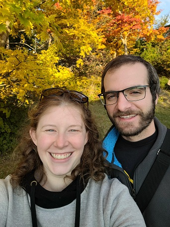

All About Jaye

こんにちは皆さん！ I am from Greenville, SC. I fell in love with Japan in middle school when a friend loaned me her copy of Trigun, and I've been studying Japanese for ~14 years now.
Before this, I lived and worked in snowy Nagano Prefecture as an English teacher for students from kindergarten to 9th grade. I ate lots of strange things during my time in Japan, but the worst was called shishamo -- pond smelt stuffed with fish eggs. The students knew I hated it and would warn me when it was in school lunch. I still had to eat it, but many of them hated it too so we would all complain together.